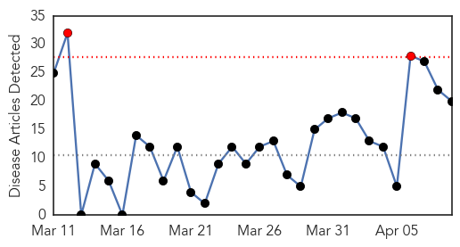
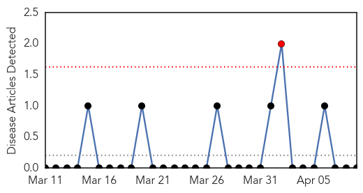

Influenza
30-Day Web Trend
2 alerts, 0 warnings

30-Day Twitter Trend
0 alerts, 0 warnings

Article Locations

Article Confidences

Top Articles:
- 0.994
- Ont. bird flu outbreak caused by H5N2, same virus that hit B.C.
- 0.993
- Ont. bird flu outbreak caused by H5N2 virus
- 0.983
- Dog Flu Epidemic Could Spread
- 0.947
- Officials: Owners Should Consider Vaccinating Dogs Against Flu Virus
- 0.933
- Bird deaths by county: The avian flu outbreak in Minnesota
- 0.910
- Bird flu war intensifies
- 0.895
- Kids with neurological disorders need flu vaccines but don't always get them
- 0.857
- Vets in Michigan concerned about dog flu outbreak
- 0.849
- Avian flu infects Meeker County flock of 310,000
- 0.839
- WHO notes 9 new H5N1 cases in Egypt, outlines patterns
- 0.778
- Avian flu infects Meeker County flock of 310,000
- 0.751
- April 9, 2015 Archives
- 0.751
- April 9, 2015 Archives
- 0.751
- April 8, 2015 Archives
- 0.751
- April 8, 2015 Archives
- 0.615
- Ohio poultry at risk for a potent strain of avian influenza
- 0.609
- High demand of dog flu vaccine causes shortage
- 0.598
- Fargo's Sanford has new bio-containment unit
- 0.568
- Deadly Bird Flu Hits Ninth Minnesota Farm
- 0.550
- Avian Influenza Confirmed On Farm In Southern Ontario
Top Tweets:
-
No tweets found for Apr 09, 2015
Yellow Fever
30-Day Web Trend
1 alerts, 0 warnings

30-Day Twitter Trend
0 alerts, 0 warnings

Article Locations

Article Confidences

Top Articles:
-
No articles found for Apr 09, 2015
Top Tweets:
-
No tweets found for Apr 09, 2015